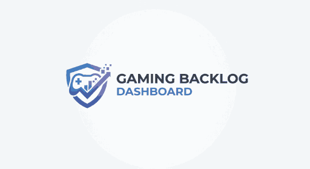
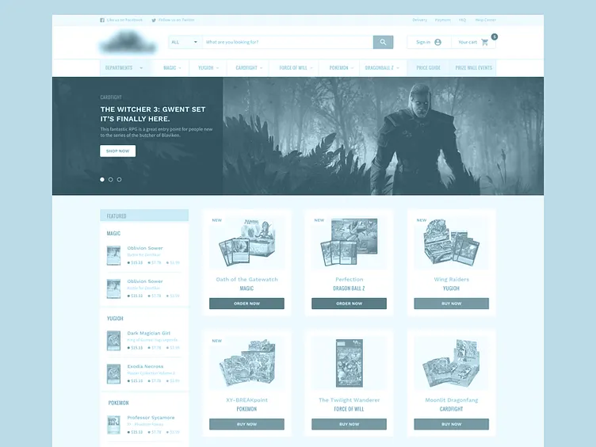

Overview
Purpose
To create a plan for users to find their favorite games to play and view information about.
Audience
My audience will contain those who are interested in video games and knowing information about them.
Dynamic elements
This project will contain a search filter, a random game generator, and a modal of each game containing more information about it.
Branding
Website Logo

Style Guide
Color Palette
Palette URL: Color Palette colors| Primary | Secondary | Accent 1 | Accent 2 |
|---|---|---|---|
| [#838993] | [#6c93c6] | [#4a73b5] | [#e9edf2] |
Pseudocode for your project
To implement your project, I will start by defining my game data as an array of objects, where each object contains
properties such as the title, platform, score, image URL, and a detailed description. I will create a renderGames
function that selects your main display container, clears its current content, and uses the .map() array method to
dynamically generate and inject HTML cards for each game in your array.
For my interactivity requirements, each game card will have an event listener attached to it that, when clicked,
triggers an openModal function. This openModal function will select the modal element in your DOM, modify its inner
HTML to display the specific details of the selected game object—including an additional image and expanded information—and
then remove a "hidden" class to make the modal visible to the user.
I will also implement a filterGames function that utilizes the .filter() method to create a new array based on the
user's selected platform and then calls the renderGames function to update the displayed list. Finally, I will
incorporate conditional branching with if statements throughout your code, such as displaying a "Must Play" badge
if a game's score exceeds a certain threshold, and you will ensure your project remains mobile-first and performant
to meet your Lighthouse accessibility and performance criteria.
Wireframes
Dashboard
Header Section: Place the "Gaming Backlog Dashboard" logo in the top-left. Include a simple navigation menu or filter buttons (e.g., "All," "PC," "Console") to the right or below the logo. Main Content Area (The Grid): Use a responsive CSS Grid or Flexbox container. Game Cards: Each card contains a small representative image (required for the rubric), the game title, and a "View Details" button. On mobile, these cards stack vertically. On tablet/desktop, these cards align in 2 to 4 columns. Interaction: The "View Details" button on each card will trigger the JS event listener to open the Modal.
Game Details View (Modal)
This view is a "floating" layer over your existing dashboard. It provides the expanded information without needing a second HTML page. Overlay: A semi-transparent background that covers the entire viewport to focus the user's attention on the game content. The Modal Box: Close Button: An 'X' or "Close" button placed in the top-right corner to allow the user to exit the view. Image Section: A large, secondary, high-resolution image of the game (fulfilling the "additional picture" requirement). Info Section: Title: Large, bold heading. Dynamic Metadata: A section for the description, platform, and playtime. Conditional Badge: An area that displays a "Must Play" badge only if the game score is above 85 (satisfying the conditional branching requirement).
